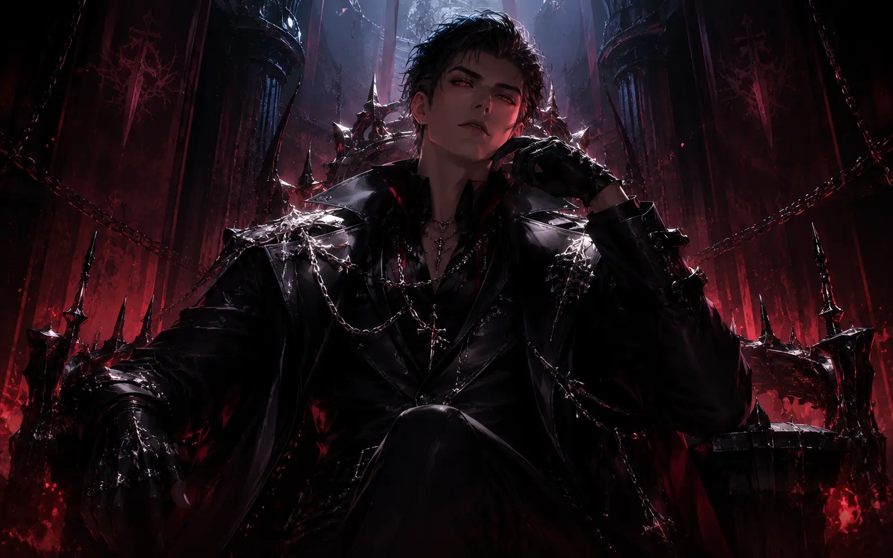
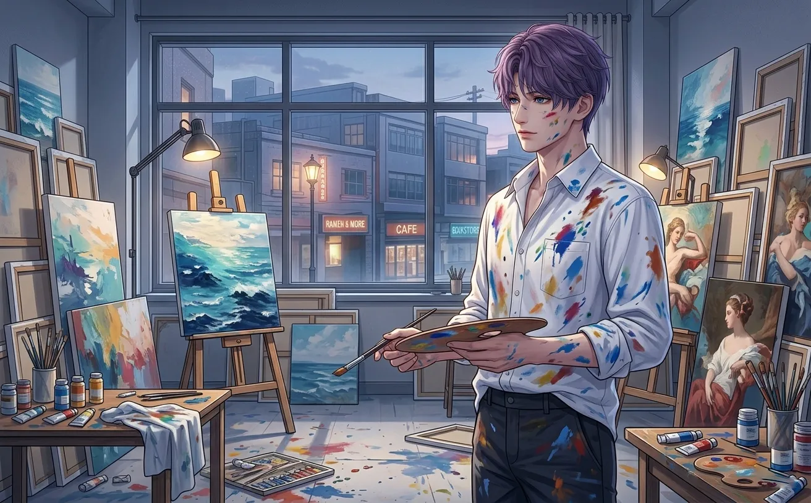
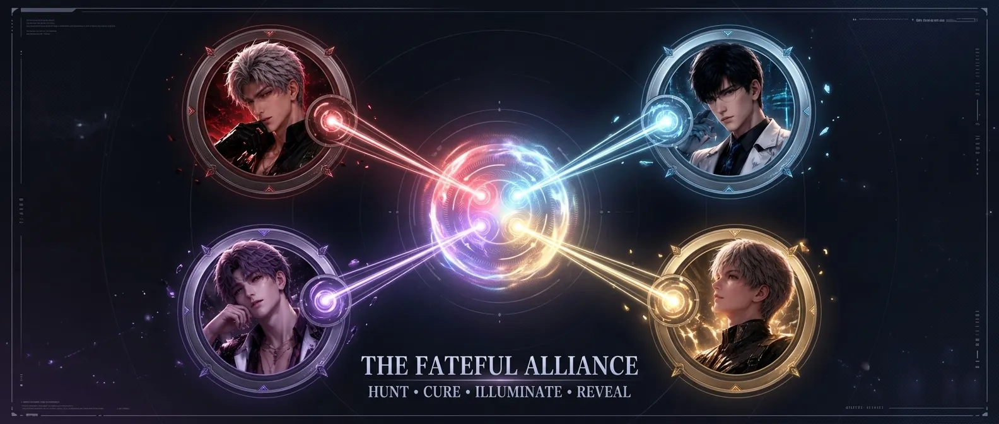

sylus, xavier, zayne, rafayel — strengths, weaknesses, playstyles, and who they're for.
you have four characters. you have limited resources. you can't build them all at once.
so who gets your protocores? who deserves your time? who fits your playstyle?
this guide answers those questions. no fluff. no bias. just data, comparisons, and honest advice.
(if you already know who you want to main, skip to section 6 for team building.)

sylus is the leader of onychinus, the ruler of the n109 zone, and one of the most aggressive characters in love and deepspace. his dark element abilities focus on sustained damage and an energy loop that — once mastered — feels infinite.
aggressive. always moving. sylus wants to be in the enemy's face, dodging attacks, building energy, and spamming resonance skills. you can't play him passively — you'll lose your energy loop.
the core rotation is simple: basic attack → perfect dodge → resonance skill → repeat. once you internalize the rhythm, sylus becomes a machine gun.
sylus doesn't need specific teammates, but he appreciates:
main sylus if: you enjoy aggressive playstyles, don't mind practicing, and want a character who rewards skill with infinite damage uptime.
don't main sylus if: you prefer slow, safe gameplay, or you don't want to farm ER substats.
xavier is a knight from the dying planet philos, a deepspace hunter, and the character with the highest burst ceiling in the game. his light element abilities concentrate 80% of his damage into a 4-frame window. miss that window, and you lose 40% of your damage.
xavier is a sniper. you wait. you watch. you learn enemy patterns. then you unleash everything in a 4-frame window.
outside that window, you're building energy and setting up. inside that window, you're doing all your damage. if you miss, you wait for the next window.
this is not a character for people who like to spam buttons.
main xavier if: you're a perfectionist, you love frame-perfect gameplay, and you want the highest damage ceiling in the game.
don't main xavier if: you get frustrated easily, you don't want to practice timing, or you prefer consistent damage over burst.
zayne is a world-renowned cardiac surgeon and a deepspace hunter with ice abilities. he's the most forgiving character in the game — freeze gives you time to breathe, and his consistent damage means you don't need perfect execution to clear content.
zayne is a control mage. freeze enemies, then damage them while they can't move. the rotation is straightforward: build energy, freeze, damage, repeat.
you don't need perfect timing. you don't need frame-perfect dodges. just keep the freeze going and let the damage accumulate.
main zayne if: you're new to the game, you prefer safe playstyles, or you want a character who can clear content without perfect execution.
don't main zayne if: you're chasing speedrun records, you want the highest numbers, or you find freeze rotations boring.

rafayel is the last prince of lemuria, a painter, and the game's DOT (damage over time) specialist. his fire abilities stack burn on enemies, dealing consistent damage over time. he's not flashy — but he's effective.
rafayel is a patient character. apply burn stacks, then dodge, survive, and let the damage tick. you don't need to constantly attack — his DOT does the work for you.
this makes him great for players who don't like button-mashing.
main rafayel if: you like DOT playstyles, you're f2p, or you want a low-effort character who still clears content.
don't main rafayel if: you want big burst numbers, you dislike waiting for damage, or you find DOT boring.

main carry + sub dps / support + sustain
most teams follow this formula. your main carry does the majority of damage. your sub dps provides elemental coverage or burst support. your sustain keeps everyone alive.
there's no wrong choice. every character can clear all content.
but some characters will feel better to you than others.
choose the one that matches your playstyle. not the one the tier list tells you to.
— happy hunting